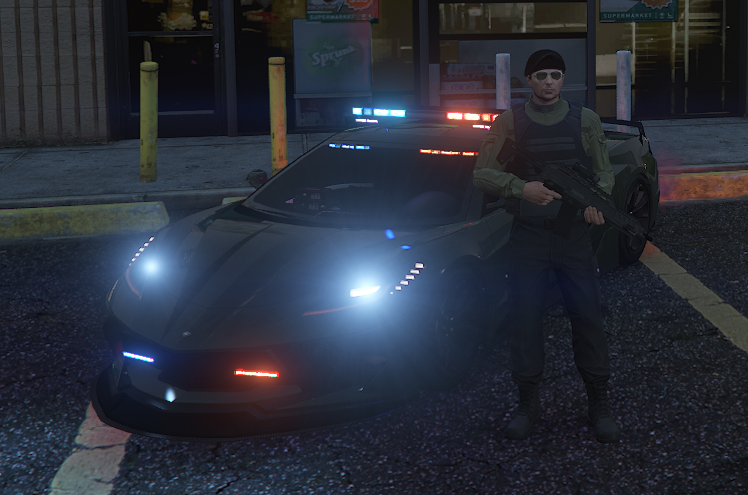
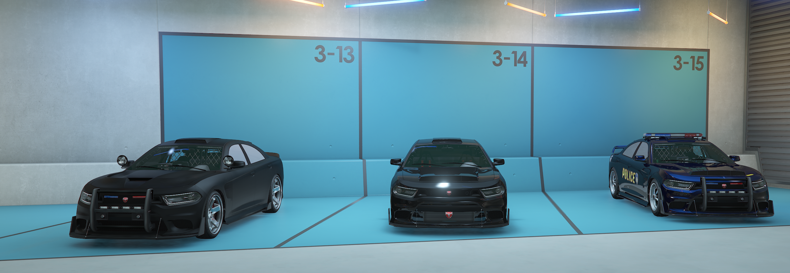
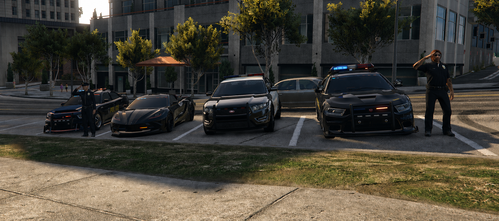

VÉHICULES TERRESTRES
Intervention terrestre




Les unités terrestres assurent les déplacements principaux du crew DASSOLT lors des interventions, escortes et convois. Ils permettent de sécuriser les axes, transporter les membres, protéger les VIP et maintenir une présence visible sur le terrain. En opération, chaque véhicule a un rôle précis : ouverture de route, escorte rapprochée, transport, protection arrière ou appui tactique.